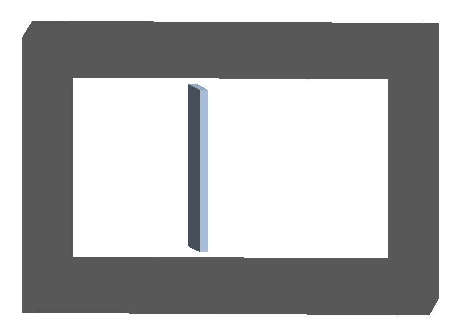
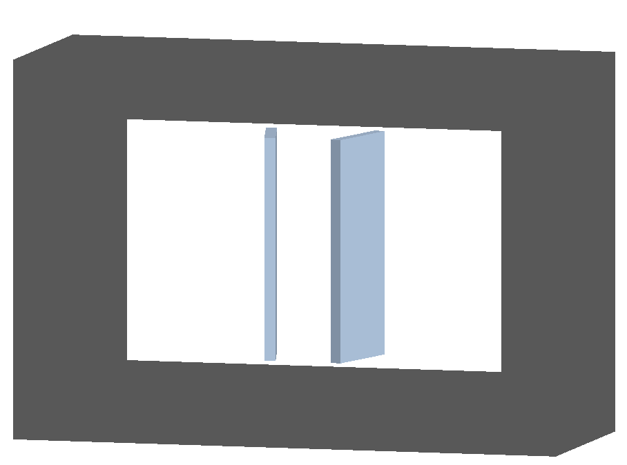
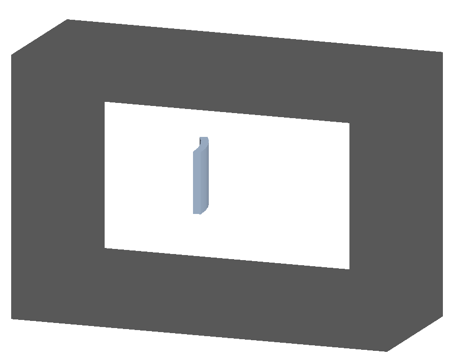
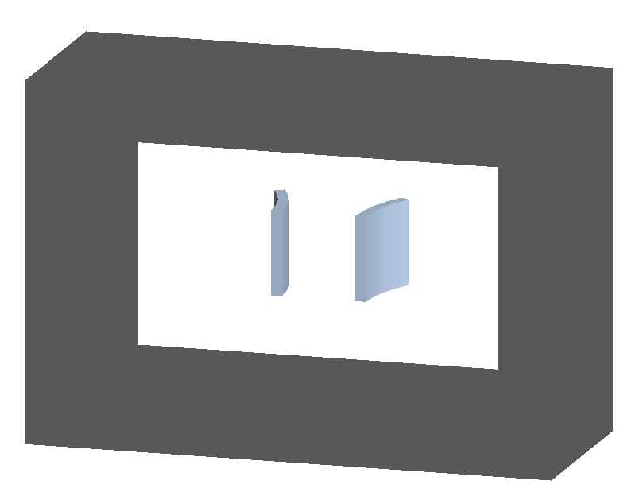
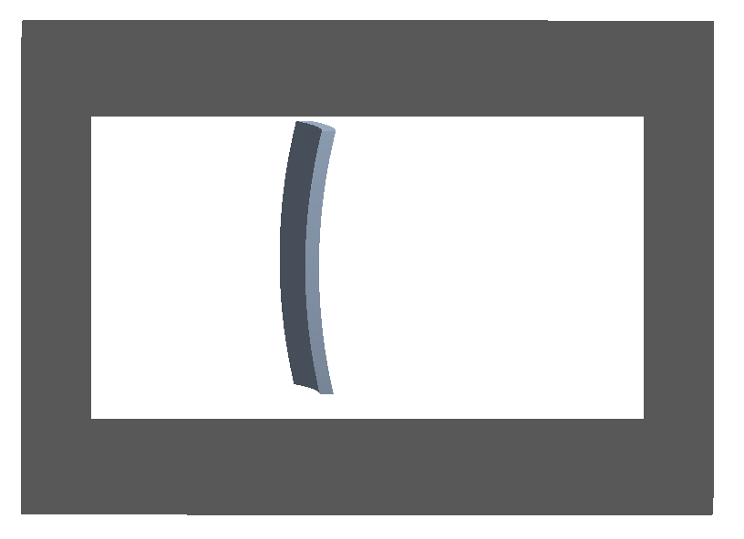
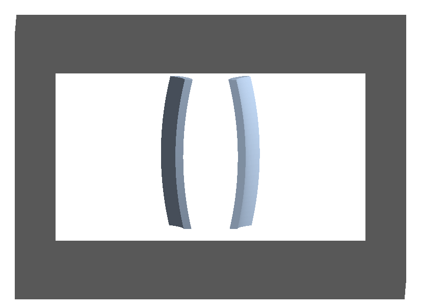
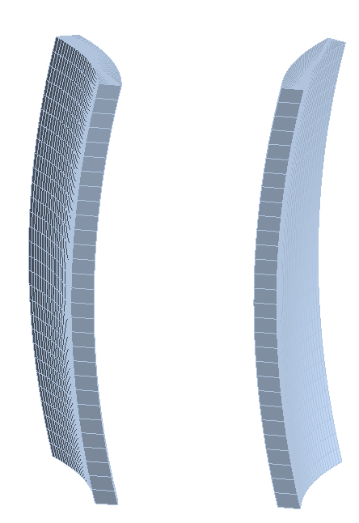

Crystals
In each of the following examples one or more crystals are placed inside a piece of beam pipe through the crystalcol beam line element.
As the typical angles for crystal channelling are very low (in the miliradian to microradian regime), exaggerated examples are provided that are not suitable for channelling studies but are however useful to visualise the geometry involved. These exaggerated versions are suffixed with “strong”.
There is the possibility of one or two crystals. Models with “1” in the name have only 1 and with “2” in the name two.
Note
The crystal structure is independent of the geometry used and the geometry merely acts as a shape where the crystal applies.
crystal-box
crystal-box1-strong.gmad
crystal-box1.gmad
crystal-box2-strong.gmad
Crystals with the simple box geometry.
{kind=link}

{kind=link}

crystal-cylinder
crystal-cylinder1-strong.gmad
crystal-cylinder1.gmad
crystal-cylinder2-strong.gmad
Crystals with geometry that’s a section of a hollow cylinder.
{kind=link}

{kind=link}

crystal-cylinder
crystal-cylinder1-strong.gmad
crystal-cylinder1.gmad
crystal-cylinder2-strong.gmad
Crystals with geometry that’s bent in both axes. This would similar to a small section of a hollow torus, hence the “torus” name. However, this is constructed as a G4ExtrudedSolid as it’s possible to choose angles that would result in an unphysical torus.
{kind=link}

{kind=link}

To construct the extruded solid, a cross-section is made at one (local, not machine coordinate frame) z plane and extruded along the (local) z axis with different offsets in x. Currently, 30 points are used along each dimension. The points are shown in the following figure.
{kind=link}
